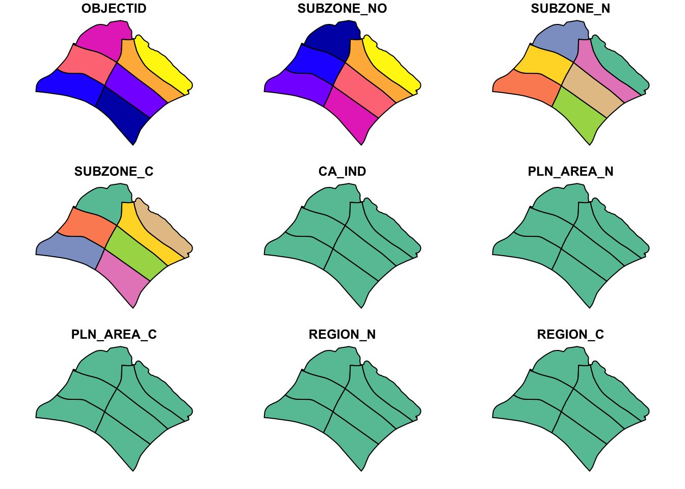
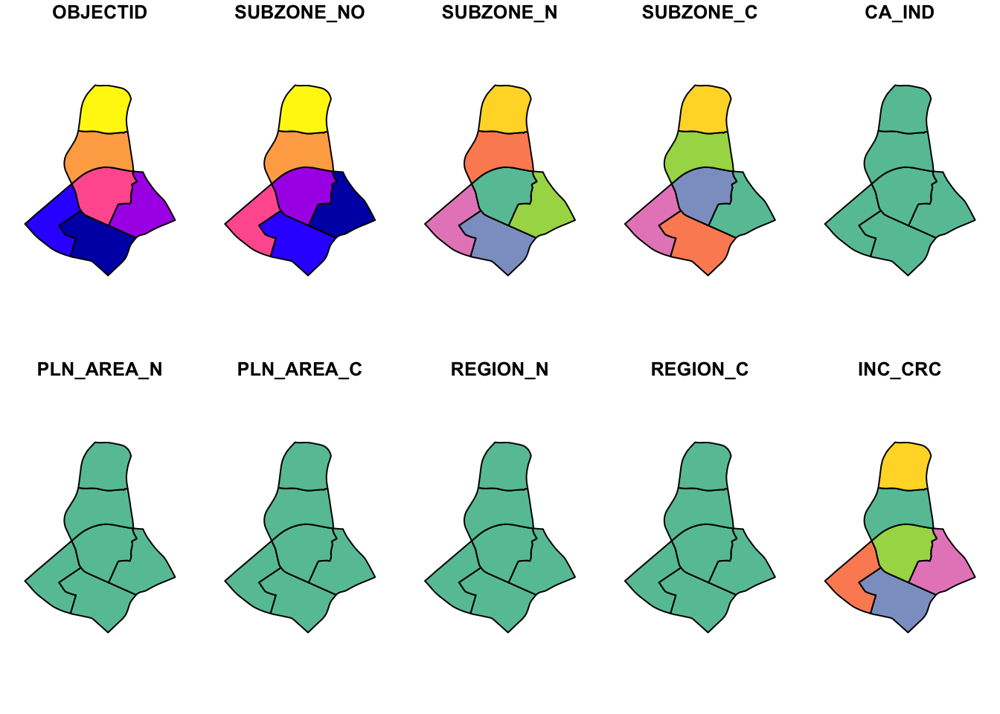
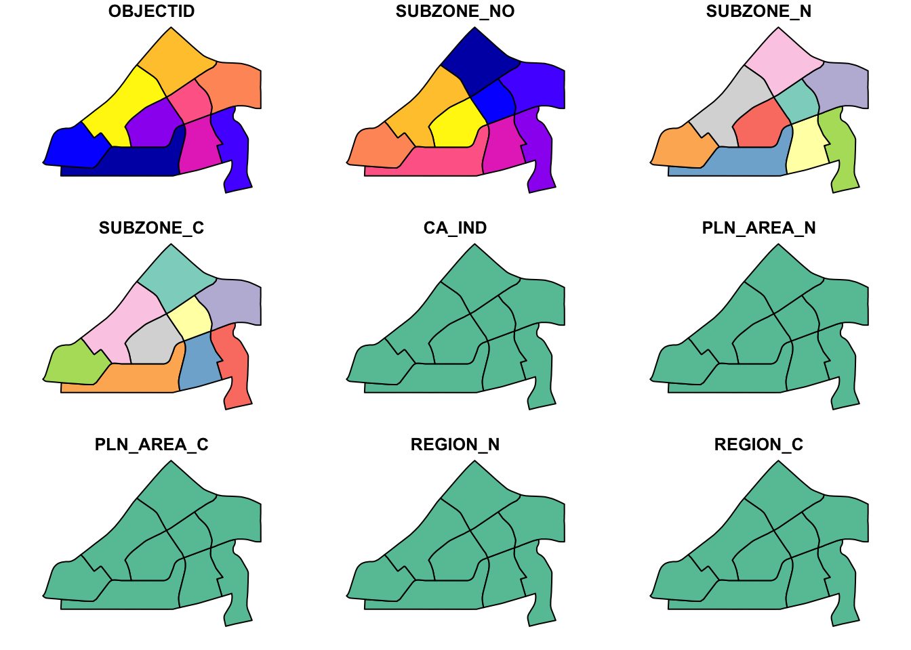

In-class Exercise 3: Kernel Density Estimation
Install maptools
Show the code
Reading layer `ChildCareServices' from data source
`/Users/tangtang/Desktop/IS415 Geospatial Analytics and Applications/practice/is415gaa/data/geospatial/ChildCareServices.geojson'
using driver `GeoJSON'
Simple feature collection with 1925 features and 2 fields
Geometry type: POINT
Dimension: XYZ
Bounding box: xmin: 103.6878 ymin: 1.247759 xmax: 103.9897 ymax: 1.462134
z_range: zmin: 0 zmax: 0
Geodetic CRS: WGS 84Reading layer `MP14_SUBZONE_WEB_PL' from data source
`/Users/tangtang/Desktop/IS415 Geospatial Analytics and Applications/practice/is415gaa/data/geospatial'
using driver `ESRI Shapefile'
Simple feature collection with 323 features and 15 fields
Geometry type: MULTIPOLYGON
Dimension: XY
Bounding box: xmin: 2667.538 ymin: 15748.72 xmax: 56396.44 ymax: 50256.33
Projected CRS: SVY21Create CoastalOutline
Warning: plotting the first 9 out of 15 attributes; use max.plot = 15 to plot
all
size of map is by default taking the entire mpsz_sf boundary -> appear small

Geospatial data wrangling
Creating ppp objects (directly from sf)
Not necessary to convert into Spatial -> sp -> pp (Textbook chapter 4.5.1 to 4.5.3)
Warning in as.ppp.sf(childcare_sf): only first attribute column is used for
marksArea unit not known -> package design
Marked planar point pattern: 1925 points
Average intensity 2.417323e-06 points per square unit
Coordinates are given to 3 decimal places
i.e. rounded to the nearest multiple of 0.001 units
marks are of type 'character'
Summary:
Length Class Mode
1925 character character
Window: rectangle = [11810.03, 45404.24] x [25596.33, 49300.88] units
(33590 x 23700 units)
Window area = 796335000 square unitsHandle duplicated data
Check for duplicated data point
Count number of co-indicence point
[1] 1 1 1 1 1 1 1 1 1 1 1 1 1 1 1 1 1 1 1 1 1 1 1 1 1 1 1 1 1 1 1 1 1 1 1 1 1
[38] 1 1 1 1 1 1 1 1 1 1 1 1 1 1 1 1 1 1 1 1 1 1 1 1 1 1 1 1 1 1 1 1 1 1 1 1 1
[75] 1 1 1 1 1 1 1 1 1 1 1 1 1 1 1 1 1 1 1 1 1 1 1 1 1 1 1 1 1 1 1 1 1 1 1 1 1
[112] 1 1 1 1 1 1 1 1 1 1 1 1 1 1 1 1 1 1 1 1 1 1 1 1 1 1 1 1 1 1 1 1 1 1 1 1 1
[149] 1 1 1 1 1 1 1 1 1 1 1 1 1 1 1 1 1 1 1 1 1 1 1 1 1 1 1 1 1 1 1 1 1 1 1 1 1
[186] 1 1 1 1 1 1 1 1 1 1 1 1 1 1 1 1 1 1 1 1 1 1 1 1 1 1 1 1 1 1 1 1 1 1 1 1 1
[223] 1 1 1 1 1 1 1 1 1 1 1 1 1 1 1 1 1 1 1 1 1 1 1 1 1 1 1 1 1 1 1 1 1 1 1 1 1
[260] 1 1 1 1 1 1 1 1 1 1 1 1 1 1 1 1 1 1 1 1 1 1 1 1 1 1 1 1 1 1 1 1 1 1 1 1 1
[297] 1 1 1 1 1 1 1 1 1 1 1 1 1 1 1 1 1 1 1 1 1 1 1 1 1 1 1 1 1 1 1 1 1 1 1 1 1
[334] 1 1 1 1 1 1 1 1 1 1 1 1 1 1 1 1 1 1 1 1 1 1 1 1 1 1 1 1 1 1 1 1 1 1 1 1 1
[371] 1 1 1 1 1 1 1 1 1 1 1 1 1 1 1 1 1 1 1 1 1 1 1 1 1 1 1 1 1 1 1 1 1 1 1 1 1
[408] 1 1 1 1 1 1 1 1 1 1 1 1 1 1 1 1 1 1 1 1 1 1 1 1 1 1 1 1 1 1 1 1 1 1 1 1 1
[445] 1 1 1 1 1 1 1 1 1 1 1 1 1 1 1 1 1 1 1 1 1 1 1 1 1 1 1 1 1 1 1 1 1 1 1 1 1
[482] 1 1 1 1 1 1 1 1 1 1 1 1 1 1 1 1 1 1 1 1 1 1 1 1 1 1 1 1 1 1 1 1 1 1 1 1 1
[519] 1 1 1 1 1 1 1 1 1 1 1 1 1 1 1 1 1 1 1 1 1 1 1 1 1 1 1 1 1 1 1 1 1 1 1 1 1
[556] 1 1 1 1 1 1 1 1 1 1 1 1 1 1 1 1 1 1 1 1 1 1 1 1 1 1 1 1 1 1 1 1 1 1 1 1 1
[593] 1 1 1 1 1 1 1 1 1 1 1 1 1 1 1 1 1 1 1 1 1 1 1 1 1 1 1 1 1 1 1 1 1 1 1 1 1
[630] 1 1 1 1 1 1 1 1 1 1 1 1 1 1 1 1 1 1 1 1 1 1 1 1 1 1 1 1 1 1 1 1 1 1 1 1 1
[667] 1 1 1 1 1 1 1 1 1 1 1 1 1 1 1 1 1 1 1 1 1 1 1 1 1 1 1 1 1 1 1 1 1 1 1 1 1
[704] 1 1 1 1 1 1 1 1 1 1 1 1 1 1 1 1 1 1 1 1 1 1 1 1 1 1 1 1 1 1 1 1 1 1 1 1 1
[741] 1 1 1 1 1 1 1 1 1 1 1 1 1 1 1 1 1 1 1 1 1 1 1 1 1 1 1 1 1 1 1 1 1 1 1 1 1
[778] 1 1 1 1 1 1 1 1 1 1 1 1 1 1 1 1 1 1 1 1 1 1 1 1 1 1 1 1 1 1 1 1 1 1 1 1 1
[815] 1 1 1 1 1 1 1 1 1 1 1 1 1 1 1 1 1 1 1 1 1 1 1 1 1 1 1 1 1 1 1 1 1 1 1 1 1
[852] 1 1 1 1 1 1 1 1 1 1 1 1 1 1 1 1 1 1 1 1 1 1 1 1 1 1 1 1 1 1 1 1 1 1 1 1 1
[889] 1 1 1 1 1 1 1 1 1 1 1 1 1 1 1 1 1 1 1 1 1 1 1 1 1 1 1 1 1 1 1 1 1 1 1 1 1
[926] 1 1 1 1 1 1 1 1 1 1 1 1 1 1 1 1 1 1 1 1 1 1 1 1 1 1 1 1 1 1 1 1 1 1 1 1 1
[963] 1 1 1 1 1 1 1 1 1 1 1 1 1 1 1 1 1 1 1 1 1 1 1 1 1 1 1 1 1 1 1 1 1 1 1 1 1
[1000] 1 1 1 1 1 1 1 1 1 1 1 1 1 1 1 1 1 1 1 1 1 1 1 1 1 1 1 1 1 1 1 1 1 1 1 1 1
[1037] 1 1 1 1 1 1 1 1 1 1 1 1 1 1 1 1 1 1 1 1 1 1 1 1 1 1 1 1 1 1 1 1 1 1 1 1 1
[1074] 1 1 1 1 1 1 1 1 1 1 1 1 1 1 1 1 1 1 1 1 1 1 1 1 1 1 1 1 1 1 1 1 1 1 1 1 1
[1111] 1 1 1 1 1 1 1 1 1 1 1 1 1 1 1 1 1 1 1 1 1 1 1 1 1 1 1 1 1 1 1 1 1 1 1 1 1
[1148] 1 1 1 1 1 1 1 1 1 1 1 1 1 1 1 1 1 1 1 1 1 1 1 1 1 1 1 1 1 1 1 1 1 1 1 1 1
[1185] 1 1 1 1 1 1 1 1 1 1 1 1 1 1 1 1 1 1 1 1 1 1 1 1 1 1 1 1 1 1 1 1 1 1 1 1 1
[1222] 1 1 1 1 1 1 1 1 1 1 1 1 1 1 1 1 1 1 1 1 1 1 1 1 1 1 1 1 1 1 1 1 1 1 1 1 1
[1259] 1 1 1 1 1 1 1 1 1 1 1 1 1 1 1 1 1 1 1 1 1 1 1 1 1 1 1 1 1 1 1 1 1 1 1 1 1
[1296] 1 1 1 1 1 1 1 1 1 1 1 1 1 1 1 1 1 1 1 1 1 1 1 1 1 1 1 1 1 1 1 1 1 1 1 1 1
[1333] 1 1 1 1 1 1 1 1 1 1 1 1 1 1 1 1 1 1 1 1 1 1 1 1 1 1 1 1 1 1 1 1 1 1 1 1 1
[1370] 1 1 1 1 1 1 1 1 1 1 1 1 1 1 1 1 1 1 1 1 1 1 1 1 1 1 1 1 1 1 1 1 1 1 1 1 1
[1407] 1 1 1 1 1 1 1 1 1 1 1 1 1 1 1 1 1 1 1 1 1 1 1 1 1 1 1 1 1 1 1 1 1 1 1 1 1
[1444] 1 1 1 1 1 1 1 1 1 1 1 1 1 1 1 1 1 1 1 1 1 1 1 1 1 1 1 1 1 1 1 1 1 1 1 1 1
[1481] 1 1 1 1 1 1 1 1 1 1 1 1 1 1 1 1 1 1 1 1 1 1 1 1 1 1 1 1 1 1 1 1 1 1 1 1 1
[1518] 1 1 1 1 1 1 1 1 1 1 1 1 1 1 1 1 1 1 1 1 1 1 1 1 1 1 1 1 1 1 1 1 1 1 1 1 1
[1555] 1 1 1 1 1 1 1 1 1 1 1 1 1 1 1 1 1 1 1 1 1 1 1 1 1 1 1 1 1 1 1 1 1 1 1 1 1
[1592] 1 1 1 1 1 1 1 1 1 1 1 1 1 1 1 1 1 1 1 1 1 1 1 1 1 1 1 1 1 1 1 1 1 1 1 1 1
[1629] 1 1 1 1 1 1 1 1 1 1 1 1 1 1 1 1 1 1 1 1 1 1 1 1 1 1 1 1 1 1 1 1 1 1 1 1 1
[1666] 1 1 1 1 1 1 1 1 1 1 1 1 1 1 1 1 1 1 1 1 1 1 1 1 1 1 1 1 1 1 1 1 1 1 1 1 1
[1703] 1 1 1 1 1 1 1 1 1 1 1 1 1 1 1 1 1 1 1 1 1 1 1 1 1 1 1 1 1 1 1 1 1 1 1 1 1
[1740] 1 1 1 1 1 1 1 1 1 1 1 1 1 1 1 1 1 1 1 1 1 1 1 1 1 1 1 1 1 1 1 1 1 1 1 1 1
[1777] 1 1 1 1 1 1 1 1 1 1 1 1 1 1 1 1 1 1 1 1 1 1 1 1 1 1 1 1 1 1 1 1 1 1 1 1 1
[1814] 1 1 1 1 1 1 1 1 1 1 1 1 1 1 1 1 1 1 1 1 1 1 1 1 1 1 1 1 1 1 1 1 1 1 1 1 1
[1851] 1 1 1 1 1 1 1 1 1 1 1 1 1 1 1 1 1 1 1 1 1 1 1 1 1 1 1 1 1 1 1 1 1 1 1 1 1
[1888] 1 1 1 1 1 1 1 1 1 1 1 1 1 1 1 1 1 1 1 1 1 1 1 1 1 1 1 1 1 1 1 1 1 1 1 1 1
[1925] 1Create owin object
Like above, one can directly convert sf into owin (No need to convert sf ->sp -> owin)
Window: polygonal boundary
80 separate polygons (35 holes)
vertices area relative.area
polygon 1 14650 6.97996e+08 8.93e-01
polygon 2 (hole) 3 -2.21090e+00 -2.83e-09
polygon 3 285 1.61128e+06 2.06e-03
polygon 4 (hole) 3 -2.05920e-03 -2.63e-12
polygon 5 (hole) 3 -8.83647e-03 -1.13e-11
polygon 6 668 5.40368e+07 6.91e-02
polygon 7 44 2.26577e+03 2.90e-06
polygon 8 27 1.50315e+04 1.92e-05
polygon 9 711 1.28815e+07 1.65e-02
polygon 10 (hole) 36 -4.01660e+04 -5.14e-05
polygon 11 (hole) 317 -5.11280e+04 -6.54e-05
polygon 12 (hole) 3 -3.41405e-01 -4.37e-10
polygon 13 (hole) 3 -2.89050e-05 -3.70e-14
polygon 14 77 3.29939e+05 4.22e-04
polygon 15 30 2.80002e+04 3.58e-05
polygon 16 (hole) 3 -2.83151e-01 -3.62e-10
polygon 17 71 8.18750e+03 1.05e-05
polygon 18 (hole) 3 -1.68316e-04 -2.15e-13
polygon 19 (hole) 36 -7.79904e+03 -9.97e-06
polygon 20 (hole) 4 -2.05611e-02 -2.63e-11
polygon 21 (hole) 3 -2.18000e-06 -2.79e-15
polygon 22 (hole) 3 -3.65501e-03 -4.67e-12
polygon 23 (hole) 3 -4.95057e-02 -6.33e-11
polygon 24 (hole) 3 -3.99521e-02 -5.11e-11
polygon 25 (hole) 3 -6.62377e-01 -8.47e-10
polygon 26 (hole) 3 -2.09065e-03 -2.67e-12
polygon 27 91 1.49663e+04 1.91e-05
polygon 28 (hole) 26 -1.25665e+03 -1.61e-06
polygon 29 (hole) 349 -1.21433e+03 -1.55e-06
polygon 30 (hole) 20 -4.39069e+00 -5.62e-09
polygon 31 (hole) 48 -1.38338e+02 -1.77e-07
polygon 32 (hole) 28 -1.99862e+01 -2.56e-08
polygon 33 40 1.38607e+04 1.77e-05
polygon 34 (hole) 40 -6.00381e+03 -7.68e-06
polygon 35 (hole) 7 -1.40545e-01 -1.80e-10
polygon 36 (hole) 12 -8.36709e+01 -1.07e-07
polygon 37 45 2.51218e+03 3.21e-06
polygon 38 142 3.22293e+03 4.12e-06
polygon 39 148 3.10395e+03 3.97e-06
polygon 40 75 1.73526e+04 2.22e-05
polygon 41 83 5.28920e+03 6.76e-06
polygon 42 211 4.70521e+05 6.02e-04
polygon 43 106 3.04104e+03 3.89e-06
polygon 44 266 1.50631e+06 1.93e-03
polygon 45 71 5.63061e+03 7.20e-06
polygon 46 10 1.99717e+02 2.55e-07
polygon 47 478 2.06120e+06 2.64e-03
polygon 48 155 2.67502e+05 3.42e-04
polygon 49 1027 1.27782e+06 1.63e-03
polygon 50 (hole) 3 -1.16959e-03 -1.50e-12
polygon 51 65 8.42861e+04 1.08e-04
polygon 52 47 3.82087e+04 4.89e-05
polygon 53 6 4.50259e+02 5.76e-07
polygon 54 132 9.53357e+04 1.22e-04
polygon 55 (hole) 3 -3.23310e-04 -4.13e-13
polygon 56 4 2.69313e+02 3.44e-07
polygon 57 (hole) 3 -1.46474e-03 -1.87e-12
polygon 58 1045 4.44510e+06 5.68e-03
polygon 59 22 6.74651e+03 8.63e-06
polygon 60 64 3.43149e+04 4.39e-05
polygon 61 (hole) 3 -1.98390e-03 -2.54e-12
polygon 62 (hole) 4 -1.13774e-02 -1.46e-11
polygon 63 14 5.86546e+03 7.50e-06
polygon 64 95 5.96187e+04 7.62e-05
polygon 65 (hole) 4 -1.86410e-02 -2.38e-11
polygon 66 (hole) 3 -5.12482e-03 -6.55e-12
polygon 67 (hole) 3 -1.96410e-03 -2.51e-12
polygon 68 (hole) 3 -5.55856e-03 -7.11e-12
polygon 69 234 2.08755e+06 2.67e-03
polygon 70 10 4.90942e+02 6.28e-07
polygon 71 234 4.72886e+05 6.05e-04
polygon 72 (hole) 13 -3.91907e+02 -5.01e-07
polygon 73 15 4.03300e+04 5.16e-05
polygon 74 227 1.10308e+06 1.41e-03
polygon 75 10 6.60195e+03 8.44e-06
polygon 76 19 3.09221e+04 3.95e-05
polygon 77 145 9.61782e+05 1.23e-03
polygon 78 30 4.28933e+03 5.49e-06
polygon 79 37 1.29481e+04 1.66e-05
polygon 80 4 9.47108e+01 1.21e-07
enclosing rectangle: [2667.54, 56396.44] x [15748.72, 50256.33] units
(53730 x 34510 units)
Window area = 781945000 square units
Fraction of frame area: 0.422Combine point event to owin object
Extract planning area
with sf
Plot target planning area
mainoption gives the title for each subplot (labelling purpose)
Warning: plotting the first 9 out of 15 attributes; use max.plot = 15 to plot
all
Warning: plotting the first 9 out of 15 attributes; use max.plot = 15 to plot
all
Warning: plotting the first 10 out of 15 attributes; use max.plot = 15 to plot
all
Warning: plotting the first 9 out of 15 attributes; use max.plot = 15 to plot
all